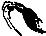
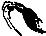

| 
| 
|  | 
|  |  | 
| 
| 
| 
|
|
|
|
|  |
|  |  |
|
|
|
|
In my daily work I study galaxy collisions. This phenomenon
is both dramatic and fun to see unfold, but you have
to have patience. To witness a crash from start to end
in a human life, time would have to be speeded up ten
millionfold! Luckily there are supercomputers which can
simulate galaxy collisions, and in these we can speed up
time as much as we want. Sit back and
browse through some
of the simulations, and witness the workings of gravity
on the grandest of scales.

|
| The beautiful pair of colliding galaxies NGC4038 and 4039, nicknamed `The Antennae'. Located in the southern constellation Corvus at a distance of 60 million light years (30 times further than the Andromeda galaxy) this is the best studied galaxy crash in the Universe. The antennae, or 'tidal tails', span 500 thousand light years across and form during the cosmic accident. A close-up of the two nuclei as imaged by the Hubble Space Telescope can be found here. Credit: Daniel Verschatse |
| High-speed simulation of our future night sky during the collision of the Milky Way and Andromeda galaxies. Our solar system may be catapulted out, affording us a special view of the ongoing merger. For details visit the galaxy collision simulation page. Credit: John Dubinski |
| This beautiful cluster of galaxies at a distance of about 450 million lightyears (225 times the distance to the Andromeda galaxy) is dominated by the fuzzy elliptical galaxy at the center of the image. Apart from a few spiky foreground stars in our galaxy, every object in the image is a galaxy! Credit: NASA, ESA, Hubble Heritage Team (STScI/AURA) |
These days, galaxy collisions are rare, and they will become even more exceptional in the future as galaxies will have fewer and fewer partners to collide with, and move further and further away from each other as the Univere expands. That being said, there is at least one collision to still look out for: our Milky Way galaxy is already feeling the gravitational pull from the Andromeda galaxy (M31), our closest sister galaxy in space.
| The Andromeda galaxy (M31) is the closest spiral galaxy to our own. At a distance of 2 million lightyears, this galaxy is the most distant object visible to the naked eye and located in the constellation of Andromeda. Spotting the galaxy will become considerably easier over the next 6 billion years, as our galaxy is falling toward the Andromeda galaxy at a speed of 119 km/s (75 miles/s), resulting in yet another galaxy collision. Credit: Robert Gendler |
The galaxies are falling toward each other at a speed that will bring them into collision in three to four billion years from now. A computer simulation of how our night sky will change during the collision can be found here.
In 1972, the Toomre brothers, Alar and Juri, were the first astronomers to piece it all together. They had a supercomputer that allowed them to represent a galaxy by a collection of computer particles with assigned masses and simulate how these particles would move as a result of gravitational attraction. They proposed that the tidal tails and bridges observed toward galaxy pairs are the result of gravitational interaction. Based on their computations they later (1977) sorted a collection of known galaxy pairs in order of merger phase, now known as the Toomre sequence:
|
|
|
|
|
|
|
|
|
Another process contributing to a spectacular rise in luminosity during a galaxy collision involves monster black holes lurking at the centers of these galaxies. The change in gravitational pull during a galaxy merger sends stars and gas clouds spiraling in to the black holes, where they disappear behind the event horizon after surrendering their stored gravitational energy to the extremely hot and luminous accretion disk that feeds the central monster.
| Artist impression of what an accretion disk around a black hole might look like. Matter attracted by the gravity of the black hole accumulates in the accretion disk and spirals in to the event horizon, beyond which no light can escape. Credit: NASA, Dana Berry |
My research focusses on the most luminous galaxy collisions, taking place in galaxies that are faint in visible light and bright in infrared light, images, the so-called `luminous infrared galaxies'. The progenitors of these mergers are particularly rich in gas clouds, which predestine them up for extraordinary intense starbursts in which up to a thousand solar masses of gas per year are converted into stars. In comparison, the star forming rate in our Milky Way galaxy is at present just a wimpy one solar mass per year. The majority of luminous infrared galaxies also host very luminous central black holes, and they too florish thanks to the rich supply of gas and stars sent their way during the merger process.

|
| Snapshots of 15 ultra-luminous infrared galaxies as observed with NASA's Hubble Space Telescope. Several of the galaxies show multiple nuclei, indicating that more than two galaxies may be merging. Credit: NASA, Kirk Borne (Raytheon and NASA Goddard Space Flight Center, Greenbelt, Md.), Luis Colina (Instituto de Fisica de Cantabria, Spain), and Howard Bushouse and Ray Lucas (Space Telescope Science Institute, Baltimore, Md.) |
Most of the star formation in a luminous infrared galaxy takes place in the center of the galaxy crash, where the gas has piled up together with grains of silicates (sand) and carbonaceous materials (soot or coal). These so-called `dust' grains are a normal <1% component of gas clouds and play a central role in star and planet formation.
They are, however, also a nuisance, as they absorb (block) light coming from behind them, making it difficult for astronomers to see what exactly is going on at the center of a galaxy crash and find answers to important questions like:
Luckily, light has the property that it can avoid getting absorbed by dust grains if the wavelength of the light waves are long enough. A gas and dust cloud completely opaque in visible light may hence be transparent in infrared light, which has 2 to 200 times longer wavelengths! I use this fortunate property of infrared light to see deeper into the gas and dust-enshrouded hearts of colliding galaxies to study their supermassive central black holes and starbursts, and help finding answers to the questions above.
Of course, by limiting ourselves to using these infrared windows, the vast majority of the infrared wavelength range remains unstudied, which means that a lot of valuable information out there cannot be accessed. A costly but very effective way around this is to send up infrared telescopes into space and study the infrared universe from there! This also solves the problem of observing through a glowing infrared sky. The first infrared space observatory, IRAS, was launched 25 years ago and surveyed the infrared heavens at four different infrared colors. The mission was a huge success and resulted in lots of discoveries. One of these discoveries was a type of galaxy that is extremely bright in infrared light but hardly visible in visible light: the `ultra-luminous infrared galaxies' (ULIRGs), the champions among the class of colliding galaxies and the focus of my research.
| The Infrared Astronomical Satellite (IRAS). Credit: NASA | The Infrared Space Observatory (ISO). Credit: ESA | The Spitzer Space Telescope. Credit: NASA |
The sharpness of an image is also determined by the color in which the image is taken. An image taken in visible light is 10 times sharper than an image taken at 10 times longer infrared wavelengths. This explains why visible-light images taken by the Hubble Space Telescope are so much sharper than from any of the infrared space telescopes. Not only is the mirror of the Hubble Space Telescope 3 times larger in diameter, it also observes at 2-800 times shorter wavelengths than the latest infrared space telescope: a difference in sharpness of a factor 6-2400! Compare the images of the `Antennae' colliding galaxies obtained by the Hubble Space Telescope and the infrared Spitzer Space Telescope and see the striking difference in sharpness.
The next space telescope with mid-infrared observing capabilities, JWST, to be launched in 2018, will have a mirror with a diameter nearly 8 times larger than that of the current infrared space telescope. This will provide 8 times more detail to mid-infrared images of distant ultra-luminous infrared galaxies, which currently look like dots and don't tell us anything more than where they are.
| Artist impression of the James Webb Space Telescope, to be launched in 2018. Credit: NASA |
If you would apply this technique on ordinary sunlight, this would reveal a rainbow band of colors stretching from deep violet (the shortest visible wavelength) to deep red (the longest visible wavelength) which, when combined back together, conspire to give the Sun its white appearance.
| Credit: Sandking graphics |
Taking a closer look at the spectrum of the Sun, you can see that some very specific colors are clearly dimmer than others and that there are thousands of dim regions throughout the solar spectrum. These are the `fingerprints' of different atomic elements that make up the composition of the Sun! Each atomic element can be identified by its specific set of wavelengths at which it makes its mark, and these fingerprints are the same throughout the Universe!

|
| The solar spectrum as it could be seen by passing white sun light through a prism. In order to fit in this figure, the spectrum is sliced up in 50 pieces which are stacked above each other separated by black horizontal lines. The shortest wavelength light can be found at the bottom right, the longest wavelength light at the top left of the figure. Dark vertical bands and lines constitute the fingerprints of atomic elements found in the solar gas mix. Analysis of the solar spectrum started 2 centuries ago. An old solar spectrum from 1817 can be found here. Credit: Nigel Sharp (NSF), FTS, NSO, KPNO, AURA, NSF |
Taking a spectrum in infrared light serves the same purpose: obtaining the fingerprints of atoms and molecules that leave their marks at specific infrared colors. Based on these fingerprints, astronomers compute the physical conditions in the object the telescope is pointed at and infer how these conditions may have come about. For instance, in an infrared spectrum we can see whether dust grains in gas clouds are coated with a thin layer of water ice by looking for the finger prints of water ice at infrared wavelengths of 3.0 and 6.0 micrometers (6 and 12 times longer wavelengths than green light). If present, the gas cloud must be cold, because water ice cannot exist in warm environments. This then means that there cannot be a star very close-by, because it would warm up the gas cloud and melt the ice coating on the dust grains.
Below I will show what we have learned about galaxy collisions from the analysis of infrared spectra of luminous infrared galaxies. I will start by showing how different the infrared spectra of luminous infrared galaxies can be and what these differences tell us about the power sources responsible for their huge luminosity.
| An illustration of some common polycyclic aromatic hydrocarbons (PAHs). Carbon atoms (green) are grouped in ring-like (poly-cyclic) structures to which hydrogen atoms (yellow) are attached. Credit: NASA/JPL-Caltech/R. Hurt (SSC) |
On Earth you can find PAHs in the fumes of car exhausts, in mothballs, and in badly burned hamburgers. In space, PAH molecules are a normal component of gas clouds (along with dust grains, water molecules and many other species). When hit by UV or visible light from a nearby massive star a PAH molecule will start vibrating to shake off the energy it was forced to absorb. The vibration results in the emission of light at several characteristic infrared wavelengths. Infrared spectrographs can detect this pattern and recognize them as the infrared fingerprints of PAHs!
Star forming gas clouds can thus be recognized by looking for the presence of fingerprints of PAHs in the infrared spectrum of such a cloud. This is why we know, for instance, that the distant ultraluminous infrared galaxy IRAS 14060+2919 (700 times more distant than the Andromeda galaxy) must be undergoing an intense starburst. The stars first born within the contracting gas clouds are illuminating their birth cloud, force the PAH molecules to vibrate and shake off the excess energy in the form of infrared light.

|
| Infrared spectrum of the luminous infrared galaxy IRAS 14060+2919 as obtained with the Spitzer Space Telescope. On the horizontal axis the wavelength of the infrared light increases to the right. Visible light has wavelengths between 0.4 and 0.7 micrometers, far outside the plotted wavelength range. On the vertical axis you can read off the brightness of the galaxy at each infrared wavelength. The wiggles shown in light blue shading constitute fingerprints of PAH molecules. Since they stick out above the rest of the spectrum it means that they add brightness to the object. In contrast, fingerprints in the solar spectrum subtract brightness. This is why they show up as dark bands and lines in the solar spectrum. Credit: Henrik Spoon |
From the detection of PAH fingerprints in the spectrum of IRAS 14060+2919 we estimate that this galaxy is turning gas clouds into stars at a rate of 400 solar masses per year! 400 times faster than in our peaceful galaxy, and all as the result of a collision with another galaxy.
PAH fingerprints are also found all over the Antennae galaxies, indicating that they too derive their huge luminosity from a collision-triggered starburst.
| Credit: ESA / V. Beckmann (NASA-GSFC) |
| Credit: Henrik Spoon |
The pair of colliding galaxies named Markarian 463 (galaxy number 463 in the catalogue of the Armenian astronomer Markarian; 300 times more distant than the Andromeda galaxy) is a typical case of a luminous infrared galaxy dominated by a central black hole; or two in this case, one in each of the merging galaxies! The infrared spectrum of this merger looks quite different from that of IRAS 14060+2919 (the starburst-dominated galaxy). PAH emission bands are absent, indicating that this galaxy is not powered by a starburst. Instead we see fingerprints of Neon atoms stripped of 4 or 5 electrons: the sign posts of a feeding black hole!
Also notice how much brighter Mrk463 is at 5 micrometers than IRAS 14060+2919 is. This indicates that Mrk463 must harbor a hot torus, glowing brightly at short infrared wavelengths (3 to 12 micrometers): the other tell-tale sign of a feeding supermassive black hole!
Our findings were recently confirmed by Stefano Bianchi and his colleagues, who pointed the X-ray space telescope ``Chandra'' toward Mrk463. They detected the X-ray light from the scorchingly hot accretion disks in both colliding galaxies!
The pronounced silicate feature holds the key to unlocking part of the mystery. Silicates are one of the two main materials from which dust grains are assembled. So, when we find a silicate feature in a spectrum, we know we that we are looking at dust grains. And, as we discussed before, where there are dust grains there are gas clouds. The strength of the silicate feature hence indicates that the power sources of these galaxies are hidden behind a very thick layer of gas clouds. The thickness of this layer is so great that we cannot see through, even in the infrared. This explains why we don't find fingerprints of a starburst or of a feeding supermassive black hole in spectra of this kind of luminous infrared galaxies: their fingerprints are obscured!
| The central region of the deeply enshrouded luminous infrared galaxy NGC4418 is dominated by a point-like nucleus, which is responsible for most of the galaxy's luminosity. Credit: Nick Scoville (Caltech) |
A good example of a deeply enshrouded luminous infrared galaxy is NGC4418, a relatively nearby galaxy (40 times more distant than the Andromeda galaxy). Images show the galaxy to lack a spiral structure and nearly all its luminosity to originate in a tiny point-like nucleus. The infrared spectrum of NGC4418 is markedly different from that of the starbursting galaxy IRAS 14060+2919 and the black hole-dominated galaxy Mrk463. Besides a deep silicate feature, the spectrum shows other pronounced features that are not present in the spectra of the other two galaxies. These finger prints may hold clues to what is going on within the deeply obscured region!
| Credit: Henrik Spoon |
One such fingerprint is found at a wavelength of 6 micrometers and indicates the presence of huge amounts of water ice. From other studies we know that water ice freezes out on dust grains when gas clouds are cold enough. For NGC4418 this means that the gas clouds that obscure its tiny power house must be very cold.
Another set of fingerprints, at wavelengths around 14 micrometers, indicates that some of the obscuring clouds must be very dense and may be forming new stars inside! The latter we infer from comparing to studies of star forming regions in our own galaxy, where the fingerprints of acetelyne (C2H2) at 13.7 micrometers and hydrogen cyanide (HCN) at 14.0 micrometers appear in the infrared spectra of dense gas shells around 'stars-under-construction', the so-called 'proto stars'.
Another indication that infrared spectra like those of NGC4418 may be indicating hidden star formation is the presence of fingerprints of crystalline silicates (crushed glass) at several wavelengths in the infrared spectrum. In our galaxy we see these finger prints in the infrared spectra of debris disks around newly formed stars, where the intense radiation from the new-born star heats up dust grains in the disk and forges the silicates into glass-like substances, one of which is a well-known mineral known as Forsterite.
| A piece of forsterite mineral as found on Earth. In space tiny Forsterite particles are formed in the stellar winds of old massive stars and in the dense gas clouds around recently formed stars. In distant LIRGs and ULIRGs their presence may signal an ongoing intense starburst. Credit: Fabre Minerals |
Crystalline silicates are also forged in the `stellar winds' (breath) of aging massive stars and are blown away along with other stellar debris. Other observations in our galaxy tell us that crystalline silicates are easily destroyed in the harsh climate between stars, the `interstellar medium': fingerprints of crystalline silicates are not found in any other environments than the places where we know crystalline silicates are being formed. And yet, deeply enshrouded luminous infrared galaxies like NGC4418 show them to be a prominent component of the gas clouds that obscure their nuclei -- exactly the kind of environment where we would have expected crystalline silicates to have been destroyed! The detection of their fingerprints in gas clouds in NGC4418 must hence mean that crystalline silicates are being replenished faster than that they are being destroyed, and that the furnaces where they are formed are likely close-by. My best bet: a starburst behind the clouds!
In 2006, the discovery of crystalline silicates in ULIRGs by a group of astronomers led by me resulted in a NASA press release. The story, graphics and a podcast interview with me can be found here.
In the diagram below I have used the strength of the fingerprints of PAHs and silicates on the two axes to classify (ultra)luminous infrared galaxies as starburst-dominated, black hole-dominated and enshrouded. You can see that the method works well: IRAS 14060+2919, Mrk463 and NGC4418 each have their own niche in the diagram! To find out why, move your cursor onto the image. This reveals that IRAS 14060+2919 has strong PAH fingerprints but no silicate fingerprint; Mrk463 has neither a clear silicate fingerprint nor a noticable PAH fingerprint; and NGC4418 has a strong silicate fingerprint but shows no PAHs in its spectrum.
Most of the other luminous infrared galaxies that we fingerprinted seem to line up along two branches. One that diagonally connects NGC4418 and IRAS 14060+2919, and another that horizontally connects Mrk463 and IRAS 14060+2919. Galaxies on these branches have properties in common with both galaxies at its extremes. For instance, a galaxy half way along the horizontal branch has a feeding supermassive black hole at its center and a starburst around it,a galaxy half way along the diagonal branch has both an enshrouded nucleus and a starburst around it.
As you can see, most of the luminous infrared galaxies that we fingerprinted seem to be starburst dominated, with little to moderate obscuration in the nucleus. There are also quite a few that thank their luminosity largely to a feeding supermassive black hole. And then there is the mysterious class of luminous infrared galaxies that look most like NGC4418. Their strong obscuration cannot last forever. The gas clouds piled up around the nucleus eventually will turn into stars or will be dispersed by the power source hiding behind them. Some of my colleagues think that this power source is a feeding black hole. I, myself, think that this is a serious possibility, but there is no clear evidence yet (fingerprints!) to prove it. If they indeed are deeply buried supermassive black holes, they will eventually transform into sources like Mrk463 and should migrate downward in the diagram toward Mrk463. As you can see, there are a few galaxies in this transition region (labeled class "2A" in the diagram). These luminous infrared galaxies may be on their way. Of course we could wait a few 100 million years to see whether these sources have transformed themselves and have moved in my diagram. Astronomers do not want to wait this long. We will create more sophisticated galaxy crash simulations, launch more powerful space observatories and gather more spectra to study galaxy fingerprints across all wavelengths and solve this mystery before any galaxy has moved an inch.
In parallel with our detailed spectroscopic studies of nearby luminous infrared galaxies, the Spitzer Space Telescope has also been collecting spectra for luminous infrared galaxies at far greater distances. These galaxies were out of reach for previous infrared space observatories because of the lack of sensitive detectors capable of registering their faint, diluted infrared light. Even for the Spitzer Space Telescope only the most luminous infrared galaxies out there are within detection range, but their spectra come through clearly enough to identify their thickest fingerprints: those of PAHs, silicates and glowing dust grains. This allows us to classify these sources in the same way as for `local' luminous infrared galaxies: as starburst-dominated, black hole-dominated or enshrouded. Other fingerprints, like those of water ice, crystalline silicates, stripped Neon atoms, or hydrogen cyanide -- to name a few -- are too weak to be detected with certainty. But this too will change when the next infrared space telescope, JWST, comes around in 2013-2014.
The infrared spectra of luminous infrared galaxies obtained by the Spitzer Space Telescope and its predecessor ISO have greatly increased our understanding of the coexistence of starbursts and supermassive black holes in the hearts of colliding galaxies. But in some cases the amount of debris piled up in the collision is too much to stay transparent in the infrared. We already saw this in the nucleus of NGC4418, where neither the fingerprints of a feeding supermassive black hole nor those of a starburst managed to register in the spectrum. There we turned to secondary fingerprints, like crystalline silicates and hydrogen cyanide to give us hints of what power sources reside under the thick blankets that cover the nucleus.
There are, however, other wavelengths that may help us to find an answer to our remaining questions. In May 2009, the European Space Agency launched another infrared telescope, the Herschel Space Observatory. This telescope, the largest observatory in space so far, will study the infrared sky at wavelengths up to 200 times longer than the Spitzer Space Telescope. At these wavelengths dust grains in gas clouds are even less opaque, allowing us to look deeper into the power houses of colliding galaxies.
| Artist impression of the Herschel Spacecraft, launched in May 2009. Credit: ESA |
| Artist impression of the ALMA site on the Chilean altiplano. The first telescopes have already been delivered and the observatory should be fully operational by 2013. Webcam images of the site can be found here. Credit: ESO |
{kind=link}
{kind=link}
{kind=link}
{kind=link}
{kind=link}
{kind=link}
{kind=link}
{kind=link}